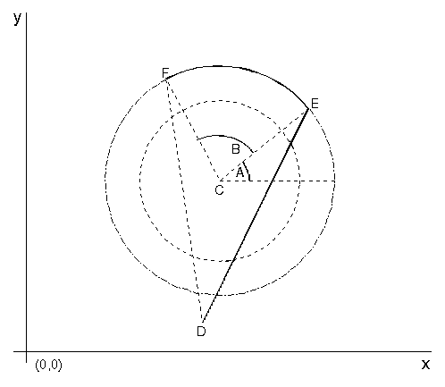

A partial arc is a section of a full arc defined by the current arc parameters. To draw a partial arc, use GpiPartialArc, which draws two separate figures. The first figure is a straight line from the current position to the starting point of a partial arc, and the second figure is the partial arc itself. When the arc has been drawn, the new current position is at the end point of the partial arc.
GpiPartialArc accepts as input the center of the current full arc, of which the partial arc is a part, specified in world coordinates. You also can specify a multiplier value to increase or decrease the size of the partial arc in relation to the current full arc.
You also must specify two positive fixed values: a start angle and a sweep angle. If the current full arc is a circle, the start angle is measured counterclockwise from the x-axis of the circle. The intersection of the start angle with the full arc, adjusted by the multiplier value, defines the starting point of the partial arc.
The sweep angle continues the counterclockwise measurement, beginning where the start angle left off. The intersection of the sweep angle with the full arc, adjusted by the multiplier value, defines the partial arc.
If the current arc is not a circle, the start and sweep angle are skewed to the same degree that the ellipse is a skewed circle. The following figure shows how the partial arc is constructed.

The Partial Arc
A is the start angle; B, the sweep angle. C is the center point; D, the current position. Arc.EF is the partial arc. F is the new current position. The inner circle in the previous figure is the arc defined by the current arc parameters. A multiplier has been specified with GpiPartialArc, so the partial arc is based on the full arc described by the outer circle. Point C is the center point specified on GpiPartialArc. Angle A is the start angle, and angle B is the sweep angle. GpiPartialArc therefore, draws a line from the current position (point D) to the start of the partial arc (point E). It also draws arc EF. Point F is the new current position. The arc is drawn counterclockwise because the current arc parameters define a counterclockwise circle. You can join points F and D with GpiLine. This line is drawn automatically if you define the partial arc within a GpiBeginArea and GpiEndArea bracket.